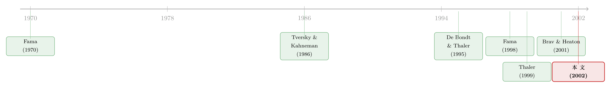

能解释一切的理性，恰恰什么都证伪不了
本文读的是 De Bondt (2002, Review of Financial Studies)——它是为 Brav and Heaton (2001) 那篇《Competing Theories of Financial Anomalies》写的一篇评论 (discussion)。Brav 和 Heaton 用一个「理性结构不确定性」模型证明：纯理性的贝叶斯学习也能长出「过度反应」和「反应不足」的脸，于是理性派和行为派难分彼此。本文作者偏不买账。他的核心反驳只有一句话：一个能解释一切的模型，恰恰什么都解释不了——因为它什么都证伪不了。 真正的分水岭不在「谁能拟合数据」，而在「谁能被数据推翻」。
1 引言：一桩三十年的悬案
先把时钟拨回 1970 年。在那篇被引到「封神」的综述里，Fama 写下了一段日后被反复引用的话：有效市场和资产定价的研究，并不是「先有一套价格形成的理论、再去做实证检验」；恰恰相反，是先有了「投机价格近似随机游走」这一大堆经验事实，经济学家才回过头去，被迫给它们「找一个说法」。用他自己的话讲——
那时候，存在的是一大堆「在寻找严谨理论」的实证结果。
三十年过去了，这个「寻找」还在继续。和当年唯一不同的是：今天，约束着各路建模努力的那些「典型事实」，已经被行为金融 (behavioral finance) 大面积接管了。过度波动 (excess volatility)、股价的长期反转 (long-run reversals)、中期的动量 (momentum)、账面市值比 (book-to-market) 在横截面上的预测力、还有 IPO 的长期跑输——这一连串市场异象 (anomalies)，把现代金融逼到了墙角。它们用的是最传统的数据和方法，做的却是「在理性假说和行为假说之间做裁判」的检验。
这里有一层很容易被忽略的「叙事位置」：本文不是一篇独立的论文，而是一篇 discussion。被它评论的那篇 Brav 和 Heaton (2001)，本博客已经单独写过（见《理性的贝叶斯学习，为什么会长出「行为偏差」的脸》）。读这一篇，最好把那一篇当作「正方陈词」，把这一篇当作「反方质询」。
被逼到墙角的现代金融，反击的姿势其实有三种。第一种，把新事实重新解释成「不算异象」（比如那些超额收益，其实是在补偿时变的风险）；第二种，质疑这些异象到底有多普遍、有多稳健（这是 Fama (1998) 的路数）；第三种，退一步说市场至少是「最低限度理性的」 (minimally rational)——意思是即便价格有偏差，市场也不提供可被稳定套出的超额利润（这是 Rubinstein (2001) 的立场）。
Brav 和 Heaton 走的，是第一种。
2 一记漂亮的「以子之矛，攻子之盾」
他们的招法很巧。与其去证明「投资者是理性的」，不如证明「就算投资者是理性的，照样能复制出行为派观察到的那些价格模式」。
具体怎么做？设想一群完全理性、做着贝叶斯更新 (Bayesian updating) 的投资者，但他们对「经济的结构本身」心里没底——这就是所谓的理性结构不确定性 (rational structural uncertainty, RSU)。当他们在估计一个本身就不稳定的估值参数时，会发生两件事：
其一，他们会给近期数据「过高」的权重——因为他们一直担心结构正在悄悄改变。从外面看，这就长得像「过度反应」。
其二，一旦真有冲击发生，他们一开始又给得「不够」——因为他们要先确认这到底是噪声还是结构性变化。从外面看，这就长得像「反应不足」。
而行为派对同样这两件事的解释是：过度反应，源于人们滥用刻板印象、用「代表性」 (representativeness) 启发式去过度看重表面的相似；反应不足，则源于「保守主义」 (conservatism)——当新证据撞上一个根深蒂固的旧信念时，人们会固执地过滤数据，只去确认自己「本来就相信的东西」。
两套故事，对新闻给出了可比的收益反应。Brav 和 Heaton 由此得出结论：在一个狭义的意义上，两种理论很难被区分开。 这听上去像是给行为金融判了一记闷棍。
3 一个自然的问题：那还要行为金融做什么？
到这里，一个聪明读者一定会问出那个最要命的问题——这其实也是 Brav 和 Heaton 把读者引向的问题，它背后站着 Thomas Kuhn 那个宏大的科学哲学之问（科学家何时该、又何时会放弃一个范式去拥抱另一个）：
既然理性学习「也许」就能解释那些恼人的异象，我们究竟为什么还需要行为金融？
很多金融经济学家在「先验」上就偏爱理性模型。Rubinstein 把这条规矩叫做资产定价研究的「最高指令」 (prime directive)：只有当所有理性的尝试都失败了，他们才肯勉强考虑行为解释。Brav 和 Heaton 这篇文章的标题、以及他们展开论证的方式，恰恰喂养了这种偏见——两种理论被摆成「直接竞争」的擂台，而那个 RSU 模型被描绘成一个不容轻易打发的劲敌。
本文作者的判断是：这个摆法，低估了行为路径的根本力量，又高估了理性学习那份至今悬而未决的贡献。
4 反转：能解释一切，就等于什么都没解释
真正关键的一步，在这里。
Brav 和 Heaton 颇为得意地指出：RSU 模型「显然足够灵活」 (clearly flexible enough)，连「过度自信」 (overconfidence) 这种被反复记录的偏差都能解释。但本文作者把这句「夸奖」反手就接了过来，定为全文的题眼——
可「灵活」并不是我们希望一个模型拥有的品质。如果我们能解释一切，那很可能意味着我们什么都没解释。
这是整篇 discussion 的脊梁。它触到的，是理性演绎方法一个更普遍的软肋：它把巨大的溢价押在数学逻辑上，却交不出几个可被检验的预测 (testable predictions)。Brav 和 Heaton 从 RSU 模型里，没有列出任何一条新的、可供事后验证的预言。理论没有被用来「驶入未知的水域」；更常见的是，再令人困惑的经验事实，都被事后 (ex post) 合理化掉，然后把学生打发回家，留下一句话：「只要它还能是理性的，那它就必定是理性的。」
这正是 Fama (1998) 自己也守着的那条底线，本文作者明确表示赞同：
市场有效性只能被「一个更好的、具体的、并且本身有可能被拒绝的价格形成模型」所取代。（p. 284）
注意那个词：potentially rejectable（有可能被拒绝）。一个为了「事后合理化」而生、灵活到能套住任何价格模式的模型，恰恰丢掉了这份可被拒绝性。于是本文作者写下了那句最锋利的反转：在这个意义上，理性路径失去的，不只是预测力，更是「方法上的纪律」。
而行为金融，凭着它「假设要现实」 (realism in assumptions) 的要求，反倒给金融建模带回了纪律。还是拿股市过度反应来说，支持它的论据分布在三个互不相同的层次上：第一，在实验室里，受试者的行为正如「代表性」启发式所预测；第二，问卷和交易数据证实，多数投资者偏爱过去的赢家、厌恶过去的输家；第三，在市场层面，系统性的价格反转确实发生了。三个层次，环环相扣。
这里有一个必须老实交代的「攻防」。Fama (1998) 和 Rubinstein (2001) 担心：研究者会从一长串心理偏差里「挑挑拣拣」，专挑那个恰好能套住手头异象的来「行为化」——总有一个偏差会碰巧合适。本文作者承认自己也有同样的顾虑（关于这种「偏差动物园」式的担忧，可参见《问卷会撒谎，交易不会——怎样在「偏差动物园」里抓出真凶》）。但他随即补了一刀：只要把心理偏差定义清楚，它其实远没有「理性」这个概念那么滑不留手——原则上，数据可以证伪手头的这个假说。 而「理性」呢？它几乎总能为自己再找一个说法。
5 行为金融的四个形容词
如果说前面是「破」，那本文的「立」，是给行为金融贴了四个形容词。这也是把全文那「一个核心」（可证伪性 vs. 万能灵活性）反复讲透的另一个侧面。
一、富有产出 (productive)。 把我们引到「还要不要行为金融」这个问题面前的，恰恰是行为金融自身在收集经验事实上的惊人生产力。换句话说，是它先把异象一个个挖出来，才有了今天这场争论。
二、务实 (pragmatic)。 现代金融建立在理性选择的逻辑上，却几乎没有一份可与之相比的「实践议程」。RSU 模型从一个前提出发——投资者早已知道什么对自己最好——它专为「事后合理化异常价格」而设计。可现实里，想学一点「金钱心理学」的人几乎排成了长队：散户、理财顾问、基金经理、投行家、盯着股价管理盈余的高管……名单长得没有尽头，甚至包括 Alan Greenspan。本文作者借 Slovic (1972) 的话点题：「对人类局限的充分理解，最终给决策者带来的好处，要远大于对自己智力『绝无谬误』的天真信仰。」这里还藏着一个 William James 式的注脚——用最务实的口吻给「真理」下定义：一个信念为真，它的「现金价值」 (cash-value) 体现在它给人的生活带来什么样的具体差别。
三、有纪律 (disciplined)。 这就是第 4 节那条主线：现实的假设，把可证伪性请了回来。
四、直觉 (intuitive)。 从投资者心理外推到市场行为，本就是再自然不过的事——它和我们在新闻媒体里听到的东西严丝合缝。既然未来是不确定的，资产估值就必然依赖判断的质量。当然，对这条直觉，理论上还有一记强有力的反驳：理性套利 (rational arbitrage)。但 Brav 和 Heaton 自己也谨慎地承认，一旦引入结构不确定性（或者说心理框架效应），套利的力量是有理论上限的。
（顺带一提，「人即便被告知面对的是随机游走，也忍不住要预测下一步」——这正是行为金融在实验室里反复验证的那种「直觉」。关于这一点，可参见《被告知是随机游走，他们还是忍不住预测下一步》。）
6 「框架」是私有的吗？——RSU 模型的两处沉默
本文还有两处对 RSU 模型的「点名批评」，都指向同一件事：这个模型对「人究竟是怎么想的」保持了沉默。
第一处，本文作者说，Brav 和 Heaton 的写法可能让读者误以为行为金融「主要是关于判断与信念形成的心理学」。可当投资者养成坏习惯、当他们拖延、或者相反地陷入「过度活跃（上瘾式）的交易」时，这些都是地地道道的理性问题，而不只是认知偏差。选择的心理学 (psychology of choice) 同样是行为研究的核心，而 RSU 模型对这些只字未提。
第二处更要害。Brav 和 Heaton 假定：在行为金融里，个体被认为「对经济的基本结构拥有相当多的知识」，唯有 RSU 模型才把这个前提视为无效。本文作者说这制造了一个假对立——恰恰相反，金融素养 (financial literacy)、以及天真的「心理框架」 (mental frame)，正是行为研究的核心关切。一个心理框架，指的是决策者看待某个问题的视角：问题如何被表述，行动与结果如何被体验。
而且，框架并不是每个人私有的、从零推导出来的东西。 本文作者的洞见在于：我们知道的大部分东西，都是「凭信任」接受下来的——珍珠港那天到底发生了什么？冥王星算不算行星？吃菠菜真能让人更健康？股票真是「长期最好」的投资吗？没有哪个新生儿能用贝叶斯的方式，从头再造一遍我们全部的集体知识。于是，心理框架是被社会与文化共享的，是被意见领袖和广告人「制造」出来的，并且——最麻烦的是——许多框架既是错的，又顽固地拒绝改变。RSU 模型对「幻觉从何而来」、对「是什么样的心智过程在维持这些幻觉」，同样一片沉默。这个问题，也就没法被简单地还原成一场「理性学习 vs. 非理性学习」的辩论。
7 文献脉络
把这条线索拉直了看，它其实是一段长达三十年的「拉锯」。

起点是 Fama (1970)：随机游走的事实在前，严谨理论的追寻在后。接着，是认知心理学的「弹药」被搬进经济学——Tversky and Kahneman (1986) 把「理性选择」与「框架效应」摆上台面，证明决策者会系统性地、甚至心甘情愿地违反理性公理。然后，行为金融开始系统地清点市场异象，De Bondt and Thaler (1995) 那篇综述是一个集大成的节点。
但真正关键的一步，是「反方」的两次出手：Fama (1998) 质疑这些长期异象的稳健性，并立下「只能被一个可被拒绝的具体模型取代」的底线；Rubinstein (2001) 则提出「最低限度理性」的市场与「最高指令」的研究规矩。Brav and Heaton (2001) 把这条理性反击推到了最精巧的形态——用 RSU 模型去「模仿」行为模式。本文 De Bondt (2002) 站在这条脉络的末端，做的不是再添一个异象，而是把争论的焦点从「谁拟合得更好」，搬到了「谁能被证伪」。
而这条线索的另一端，是 Thaler (1999) 那个著名的预言：行为金融终将消亡——不是因为它失败，而是因为「行为」二字会变成多余的赘语（「除了它，还能有什么别的金融？」）。与之针锋相对的，是 Merton Miller 1994 年那句冷峻的判断：「心理学与经济学的融合，将一无所成。」——尽管 Miller 也补了一句：这种混合之所以流行，「不过是因为传统经济学没能解释资产价格是怎么定出来的」。两句话摆在一起，本身就是这桩悬案最好的注脚。
评论与延伸（Q&A + 研究方向）
(a) 几个可能的疑问
Q：这篇「discussion」到底有没有自己的贡献，还是只是吐槽？
它没有数据、没有模型、没有一个新异象，所以从「实证产出」看几乎是零。但它的贡献是方法论上的：它把「理性能否拟合行为模式」这个看似致命的挑战，重新框定为「可证伪性」之争，并指出灵活性（能解释一切）在科学上是负资产而非正资产。这是一记四两拨千斤——用 Brav-Heaton 自己引以为傲的「flexible enough」，反证了 RSU 模型的软肋。
Q：「能解释一切就等于什么都没解释」，这是不是把行为金融自己也一并骂了？毕竟行为派也常被批「挑偏差」。
这正是本文最诚实、也最微妙的地方。作者明确承认 Fama 和 Rubinstein 的「挑偏差」顾虑（footnote 11）是成立的。他的辩护不是「行为金融没这毛病」，而是一个相对判断：只要把心理偏差定义清楚，它在原则上是可被数据证伪的；而「理性」几乎总能事后给自己找补。 是否被这个辩护说服，见仁见智——它本身就不是一个能被「证伪」的命题，而更像一种科学品味的表态。
Q：RSU 模型用「对结构没把握」就同时造出了过度反应和反应不足，这听上去也挺优雅，为什么作者不认账？
因为优雅 ≠ 可检验。作者的反驳点很具体：Brav 和 Heaton 没有从 RSU 模型里导出任何一条新的、可供事后验证的预测。一个模型如果只能复述已知事实、却推不出「下一个该去哪里找」的预言，它在科学上的杠杆就很有限。这也是为什么作者反复强调 Fama 那句「potentially rejectable」。
Q：作者说行为金融「有纪律」，可大众印象恰恰相反——行为金融不就是各种心理学故事的大杂烩吗？
作者的「纪律」指的是「假设要现实」 (realism in assumptions)，而且证据要在实验、问卷/交易、市场三个层次上彼此印证（如过度反应那三层）。这恰好是对 Milton Friedman「假设是否现实不重要、只看预测」那一传统的针锋相对。至于「大杂烩」的印象，作者承认风险存在，对策是「把偏差定义清楚、让它可证伪」。
Q：这场争论今天有结论了吗？
本文写于 2002 年，作者自己也只敢说「再过一二十年我们会知道更多」。从今天回看，行为变量已大面积进入资产定价的实证议程，但「理性 vs. 行为」并未分出胜负——更主流的做法是把两者的预测拆到「哪些投资者、出于什么动机推动了异象收益」这种更可识别的问题上（可参见《异象收益究竟是谁推动的？》）。从这个角度看，Thaler 那个「行为二字终将多余」的预言，对了一半。
(b) 几个可能的研究问题与提案
1. 把「可证伪性」做成一个可测量的指标。
【经济故事】本文的核心是「理性模型太灵活、证伪不了」，但这一直停留在修辞层面。能不能给一类资产定价模型算一个「证伪难度」分数——比如它能拟合的价格模式集合有多大、它给出多少条 out-of-sample 可检验的点预测？灵活性高的模型，分数应当差。 【可行性】中。机器学习里关于模型复杂度/容量（VC 维、有效自由度）的工具可以借用，但要把它翻译成金融语境下「假设的自由度」并不容易，识别上偏概念性。属于「值得做但很难做干净」。
2. RSU 式「结构不确定性」与行为「过度反应」在债券/信用市场能否被分开？
【经济故事】股市里两套故事难以区分，但信用市场提供了额外的约束：违约是离散的、结构性断点（评级迁移、行业冲击）是可观测的。如果过度反应来自「代表性」，它应在「表面相似但基本面不同」的发行人之间最强；如果来自 RSU 的「怕结构变」，它应在结构不确定性高的时期/行业最强。两者的横截面足迹不同。 【可行性】中高。TRACE 成交数据 + 评级迁移 + 行业冲击可以构造检验，识别靠「结构不确定性代理」与「相似性代理」的横截面交互。数据是现成的，难点在把两个机制的代理变量做干净。
3. 框架是「社会共享」的——能否在外资持有人身上找到「文化框架」的指纹？
【经济故事】本文强调心理框架由社会文化共享、由意见领袖塑造。外资与本土投资者来自不同的「框架共同体」，若框架真的影响估值，二者对同一冲击（如本地政治新闻、本地媒体叙事）的反应应当系统不同，而且这种差异应随「文化距离」放大。 【可行性】中。需要按投资者国籍拆分的持仓/成交数据（如韩国交易所的国籍标签数据），识别靠「同一资产、不同框架共同体、对同一本地冲击的反应差」。数据可得性是主要瓶颈，但并非不可能。
4. 「灵活模型」的事后合理化，能否用预注册 (pre-registration) 来约束？
【经济故事】作者批评理性派「事后合理化」。一个直接的实验性回应是：让研究者在看到新异象之前，预先登记各竞争模型的点预测，再看谁的 out-of-sample 命中率高。这把「证伪 vs. 拟合」从哲学口水变成可操作的赛马。 【可行性】高（作为方法学倡议），中（作为单篇实证）。资产定价里已有大量 out-of-sample / 数据窥探校正的工具，门槛主要在组织层面（需要一个公共的、时间戳清晰的预测登记），而非技术层面。
参考文献
De Bondt, W. F. M. (2002). Discussion of "Competing Theories of Financial Anomalies." Review of Financial Studies 15(2), 607–613.
Brav, A., and J. B. Heaton (2001). Competing Theories of Financial Anomalies. Review of Financial Studies 15, 575–606.
Fama, E. F. (1970). Efficient Capital Markets: A Review of Theory and Empirical Work. Journal of Finance 25, 383–417.
Fama, E. F. (1998). Market Efficiency, Long-Term Returns, and Behavioral Finance. Journal of Financial Economics 49, 283–306.
De Bondt, W. F. M., and R. H. Thaler (1995). Financial Decision Making in Markets and Firms: A Behavioral Perspective. In R. A. Jarrow et al. (eds.), Handbook of Finance. Elsevier-North Holland.
Tversky, A., and D. Kahneman (1986). Rational Choice and the Framing of Decisions. Journal of Business 59, 67–94.
Rubinstein, M. (2001). Rational Markets: Yes or No? The Affirmative Case. Financial Analysts Journal 57, 15–29.
Thaler, R. H. (1999). The End of Behavioral Finance. Financial Analysts Journal 55, 12–17.
Slovic, P. (1972). Psychological Study of Human Judgment: Implications for Investment Decision Making. Journal of Finance 27, 779–799.
Simon, H. A. (1983). Reason in Human Affairs. Stanford University Press.
Miller, M. H. (1986). Behavioral Rationality in Finance: The Case of Dividends. Journal of Business 59, 267–284.
Conlisk, J. (1996). Why Bounded Rationality? Journal of Economic Literature 34, 669–700.